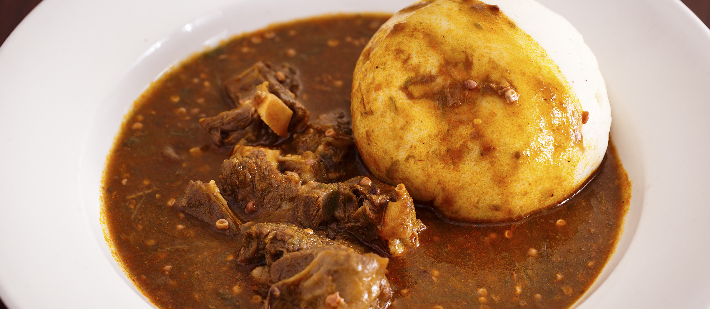

foutou

Description
In the Ivory Coast, plantain holds a privileged place in the national diet and is the base of the traditional "Foutou," the national dish.
Ingredients
- 1 piece of cassava (manioc) about the size of a large carrot
- 2 kg (4½ lbs) of plantains (8 or 9)
- salt
Directions
- Peel the cassava and plantains; cut into short lengths;.
- Boil the cassava and plantain in unsalted water until cooked, about 20 minutes;.
- Cool the plantains in their cooking water;.
- Drain the cassava; mash in a mortar with a few drops of the cooking water to prevent it from becoming sticky; it should have the consistency of a smooth paste;.
- Mash the plantains separately without adding any water until smooth;.
- Combine the plantain and cassava; add a few drops of water if necessary to achieve the proper consistency;.
- Season with salt; using your hands, form the paste into balls or oval loaves;.
- Serve with eggplant sauce or "pépé soup".